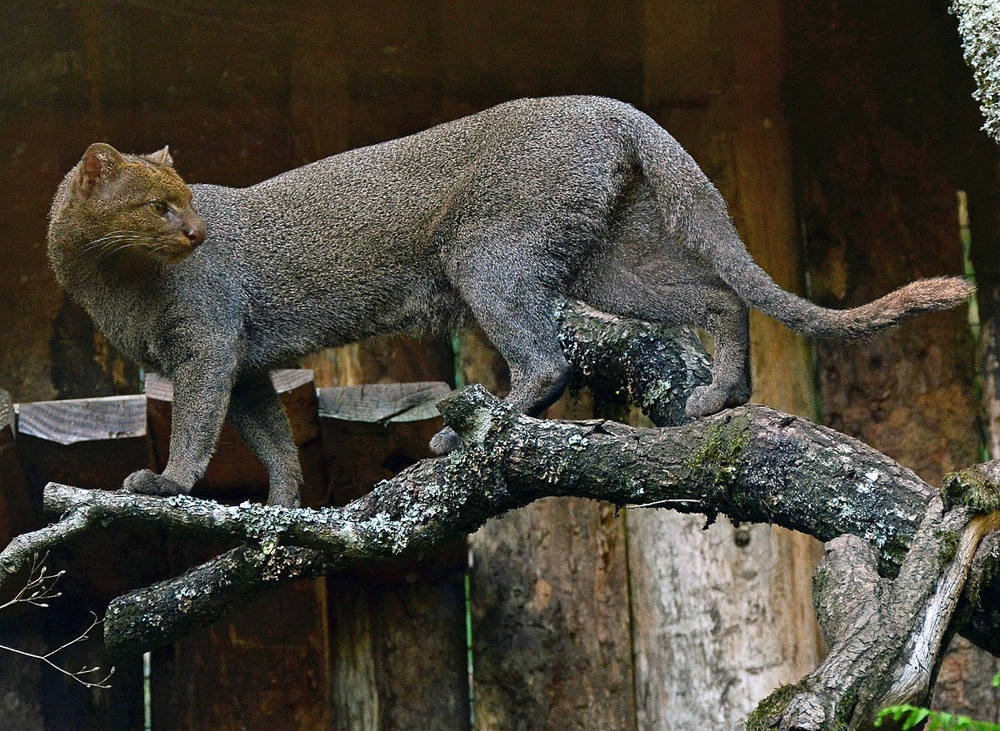
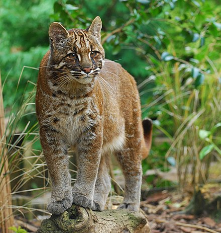
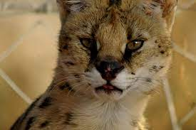
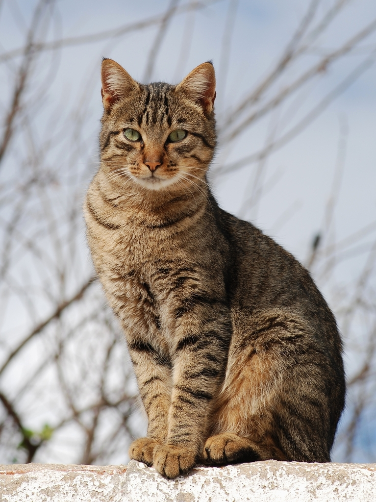

<main class="myPageLayoutGrid">
    <link type="text/css" rel="stylesheet" href="styles.css" />
    <article class="myGridArticle"></article>
<aside class="myGridAside1">
    <h3>Threats to cats</h3>
    <p>
      Some of the main reasons for declining numbers of cats are:
    </p>
    <ul>
      <li>Habitat destruction</li>
      <li>Pollution</li>
      <li>Climate change</li>
    </ul>
  </aside>
   

    
    <aside class="myGridAside2">
  
    <h3>Useful links</h3>
    <p>Facts about endangered cats</span> lists
    <a href="https://panthera.org/blog-post/ending-endangerment-wild-cats-endangered-species-day">here</a>.</p>

    <p>Check out the Wikipedia <a href="https://en.wikipedia.org/wiki/Category:Cat_conservation">article</a>.</p>
  </aside>
    

  <div id="photoBox" class="relPos">
    
    
    
    
    
</div>
</main>